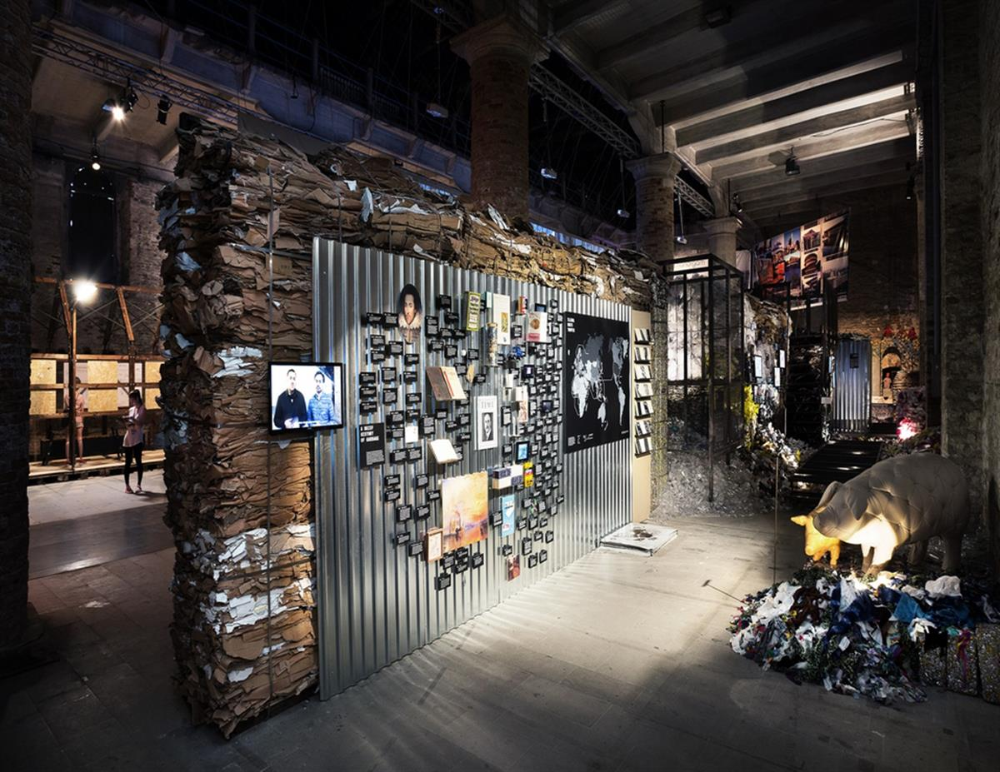
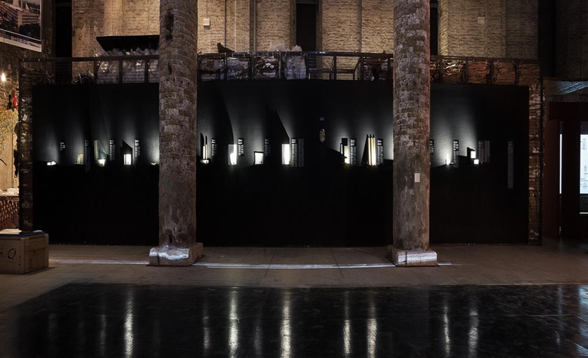

About the project
'Let’s talk about garbage' created by Hugon Kowalski and Marcin Szczelina for the main exhibition of the 15th International Venice Architecture Biennale
The 15th Venice Architecture Biennale will be dominated by socially committed architecture. Reporting from the front – which is the name of this edition of the event – will constitute a collection of records from the frontline, where architecture clashes with unfair socioeconomic conditions and fights the problems encountered in various parts of the world.
The exhibition proposed by Kowalski and Szczelina will face the global problem of waste overproduction. Our modern consumerist societies neglect the “afterlife” of their mass-produced items, packed-tight in successive layers of plastics. The stake of “Let’s talk about garbage” will be to attempt at presenting new, alternative strategies of coping with the flood of waste pouring down the streets of our cities. The creators of the exhibition will show us how architecture can stimulate the reduction of the amount of waste and how it can take part in the process of recycling.

Designing disposable or short-lived items, usually made of plastics that will decompose in landfills for hundreds or even thousands of years, contributes, in a longer perspective, to creating masses of carelessly generated waste. The creators of the exhibition will present the life cycles of some discarded items – their collection, sorting, processing and reuse. Such processes as recycling, upcycling (i.e. recycling which raises the value of the processed material) or product design in consideration of its future processing point to alternatives to the problem of waste overproduction.
Zygmunt Bauman wrote that “we dispose of refuse in the most radical and effective of all ways: not looking at it, making it feel invisible, hence we don’t have to think about it, making refuse unthinkable”. We discard everything to a black bag, pretending it is not our problem anymore. This idea is reflected in the black wall of the exhibition, which conceals the back, i.e. the further fate of waste – a rich world of apparently unknown data regarding waste and the lives of millions of people living from the recycling of what others throw away. The authors will also present an extensive palette of materials and products, proposing ecological and sustainable solutions for the construction industry. In reference to Kowalski’s diploma project, the authors will present residential solutions for the Indian Dharavi and its residents who live by what they earn from waste collection – solving their problem with the use of architecture is the primary purpose of the exhibition.
Participating in the main exhibition of the Biennale and working with its curator, Alejandro Aravena, this year’s winner of the Pritzker award (the architectural Nobel Prize) is a wonderful distinction. For the first time in history of the event, Poland will be represented at the main exhibition. The team headed by Hugon Kowalski and Marcin Szczelina will also compete for the main award of the festival – the Golden Lion.
The exhibition will be presented in the Arsenal (main Biennale exhibition) in Venice from May 28 to November 29, 2016. In 2017, “Let’s talk about garbage” will be presented in Katowice.

SOURCE: LET'S TALK ABOUT GARBAGE